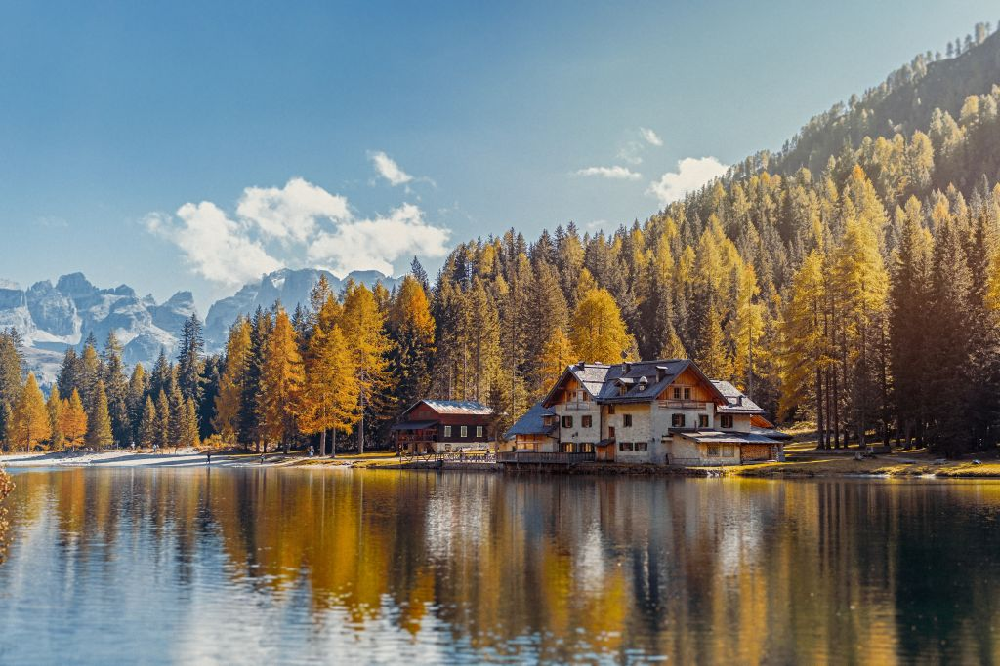
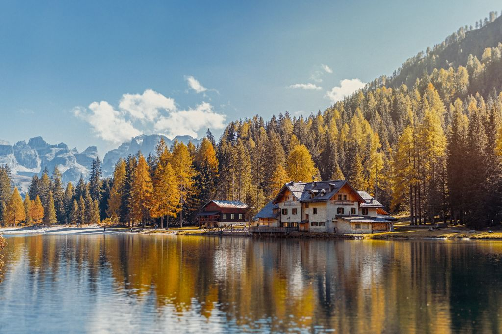

YOUR
TRAVEL
ASSISTANT
YOUR
TRAVEL
ASSISTANT
About Us
Leigh McAdam is a Calgary-based writer, photographer and social media enthusiast with over 48,000 followers. Her blog: HikeBikeTravel is frequently cited as one of the top travel and outdoor adventure blogs in Canada, and consistently receives over 135,000 monthly page views. She shares her enthusiasm for the outdoors as a brand ambassador for Sporting Life, and has worked on campaigns for Travel Alberta, Expedia and Flight Hub. Leigh is the author of Discover Canada: 100 Inspiring Outdoor Adventures. Currently, she is co-authoring: 125 Nature Hot Spots in Alberta (spring 2018). A true adventurer, Leigh will try anything once, except perhaps bungee jumping.

Opportunities for challenging hikes and pleasant strolls are scattered all over this planet; you just need to know where to find them. We do. Kilimanjaro, Everest Base Camp, Patagonia, and the Inca Trail are out there, waiting for you to walk all over them. We’re proud of our record of successful ascents (over 92% of our travellers make it to the top of Kili, depending on the route), but it’s our CEOs and local guides that make the journey itself as memorable as the summit. And if you’re not into big climbs, don’t sweat it; we’ve got loads of lower-impact walks and iconic treks you’ll love, too.


 Our trips
Our trips


Our amazing clients are the reason we exist, and their reactions to our customized travel experiences and personalized service keep us smiling all day long. Here is just a sampling of what they’ve said:

She has booked two major European trips for us in the past year and every aspect has met, and in most cases exceeded, our expectations. Best prices, best hotels, best itineraries, and best cruises, she does it all. But the most important thing is she remembers the little things that we would do if we were making the plans ourselves.

Leigh McAdam has been making my travel arrangements for about 20 years and there is no one else I would trust to arrange my trips and tours. I've also had great fun on a few of the group trips she has arranged - Peru & Machu Picchu and a 10-day cruise out of Venice and diving. It's always an eclectic group of well traveled, interesting people.

 
